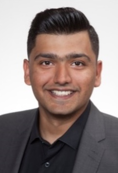

Evaluation first
Patient- or customer-level splits, leakage checks and calibration come before any headline metric. A model is only as good as the test it passed.
A software developer who came to Germany to study data science, then built machine learning for a university hospital and a wealth-management platform.

Ikram Ud Din KhanData Scientist
The short version
I started as a software developer in Pakistan after a B.S. in Computer Science at the University of Management and Technology. At EBMAC and MADD Solutions I built REST APIs, SQL and NoSQL backends and dashboards, and I have freelanced for international clients for more than ten years.
In 2020 I came to RWTH Aachen University for an M.Sc. in Data Science. My thesis tackled vertex elimination in graphs with branch and bound running on NVIDIA GPUs.
Alongside my studies I built the Smart Portfolio Insider at Aixigo AG, an LLM analytics tool integrated into the Bloxx wealth platform. At the Institute for Computational Biomedicine at Uniklinik RWTH Aachen I worked with ICU data under PhysioNet protocols and built a mortality model with an AUC of 0.978, a clinical RAG pipeline and SHAP dashboards for clinicians.
Since September 2026 I work full-time as a Junior Data Scientist.
Principles
Four habits from clinical research that make any model easier to trust.
Patient- or customer-level splits, leakage checks and calibration come before any headline metric. A model is only as good as the test it passed.
Clinicians and analysts need to see why a model flags a case. SHAP explanations and plain dashboards make that visible.
A notebook is a draft. I ship containerised services with CI/CD, monitoring and retraining triggers.
Local LLMs, synthetic data generators and strict access protocols keep sensitive data where it belongs.
Experience
Newest first. Filter by work or education.
Sep 2026 – today
Work · current
Full-time data science role
Aug 2024 – Dec 2025
Work
Uniklinik RWTH Aachen, Institute for Computational Biomedicine
Jan 2023 – Apr 2024
Work
Aixigo AG
2020 – 2025
Education
RWTH Aachen University, Germany
Sep 2019 – Sep 2020
Work
Buzzware Tech
2019
Work
MADD Solutions
2017 – 2019
Work
EBMAC
2013 – 2017
Education
University of Management and Technology (UMT), Pakistan
Alongside all of this: more than ten years of freelance work for international clients, covering full-stack development, custom ML models, LLM fine-tuning and ETL pipelines.
Toolkit
The tools I use to take a model from notebook to monitored service.
Certifications
Celonis
CITI Program (MIT)
Languages
Get in touch
Send me a note about a project on this site, a research or open-source collaboration, or machine learning in production. I usually reply within 24 hours.